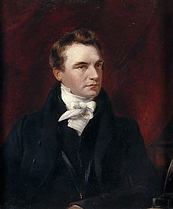

Charles Babbage
Charles Babbage was a Mathematician, Philosopher, Inventor and a Mechanical Engineer.
He was born on 26 December 1791 and died on 18 October 1871.
Charles originated the concept of a digital programmable computer.
Some people also consider babbage as "father of the computer".
Babbage is credited with inventing the first mechanical computer, 'the Difference Engine'.
Babbage, who died before the complete successful engineering of many of his designs,
including his Difference Engine and Analytical Engine, remained a prominent figure in the ideating of computing.
Difference Engine
Babbage began in 1822 with what he called the difference engine,
made to compute values of polynomial functions. It was created to calculate a series of values automatically.
By using the method of finite differences, it was possible to avoid the need for multiplication and division.
For a prototype difference engine, Babbage brought in Joseph Clement to implement the design, in 1823.
Clement worked to high standards, but his machine tools were particularly elaborate.
Under the standard terms of business of the time, he could charge for their construction, and would also own them.
He and Babbage fell out over costs around 1831. Some parts of the prototype survive in the Museum of the History of Science, Oxford.
This prototype evolved into the "first difference engine". It remained unfinished and the finished portion is located at the Science Museum in London.
This first difference engine would have been composed of around 25,000 parts, weighed fifteen short tons (13,600 kg), and would have been 8 ft (2.4 m) tall.
Although Babbage received ample funding for the project, it was never completed. He later (1847-1849) produced detailed drawings for an improved version,
"Difference Engine No. 2", but did not receive funding from the British government. His design was finally constructed in 1989-1991,
using his plans and 19th-century manufacturing tolerances. It performed its first calculation at the Science Museum, London, returning results to 31 digits.
Analytical Engine
After the attempt at making the first difference engine fell through, Babbage worked to design a more complex machine called the Analytical Engine.
He hired C. G. Jarvis, who had previously worked for Clement as a draughtsman. The Analytical Engine marks the transition from mechanised arithmetic
to fully-fledged general purpose computation. It is largely on it that Babbage's standing as computer pioneer rests.The major innovation was that
the Analytical Engine was to be programmed using punched cards: the Engine was intended to use loops of Jacquard's punched cards to control a mechanical calculator,
which could use as input the results of preceding computations. The machine was also intended to employ several features subsequently used in modern computers,
including sequential control, branching and looping. It would have been the first mechanical device to be, in principle, Turing-complete. The Engine was not a single physical machine,
but rather a succession of designs that Babbage tinkered with until his death in 1871.
The "Babbage Principle"
In Economy of Machinery was described what is now called the "Babbage principle". It pointed out commercial advantages available with more careful division of labour. As Babbage himself noted,
it had already appeared in the work of Melchiorre Gioia in 1815.The term was introduced in 1974 by Harry Braverman. Related formulations are the "principle of multiples" of Philip Sargant Florence,
and the "balance of processes".What Babbage remarked is that skilled workers typically spend parts of their time performing tasks that are below their skill level. If the labour process can be divided
among several workers, labour costs may be cut by assigning only high-skill tasks to high-cost workers, restricting other tasks to lower-paid workers. He also pointed out that training or apprenticeship
can be taken as fixed costs; but that returns to scale are available by his approach of standardisation of tasks, therefore again favouring the factory system. His view of human capital was restricted
to minimising the time period for recovery of training costs.
Early Life

According to the Oxford Dictionary of National Biography he was born at 44 Crosby Row, Walworth Road, London, England. His date of birth is 26 December 1791.
Babbage was one of four children of Benjamin Babbage and Betsy Plumleigh Teape. Benjamin Babbage and Betsy Plumleigh Teape. His father was a banking partner
of William Praed in founding Praed's & Co. of Fleet Street, London, in 1801. In 1808, the Babbage family moved into the old Rowdens house in East Teignmouth.
Around the age of eight, Babbage was sent to a country school in Alphington near Exeter to recover from a life-threatening fever. For a short time,
he attended King Edward VI Grammar School in Totnes, South Devon, but his health forced him back to private tutors for a time. Babbage then joined the 30-student Holmwood Academy,
in Baker Street, Enfield, Middlesex, under the Reverend Stephen Freeman. The academy had a library that prompted Babbage's love of mathematics. He studied with
two more private tutors after leaving the academy. The first was a clergyman near Cambridge; through him Babbage encountered Charles Simeon and his evangelical followers,
but the tuition was not what he needed. He was brought home, to study at the Totnes school: this was at age 16 or 17. The second was an Oxford tutor, under whom Babbage
reached a level in Classics sufficient to be accepted by the University of Cambridge.
All Rights Reserved;
Web Developer - Pranjal Sharma